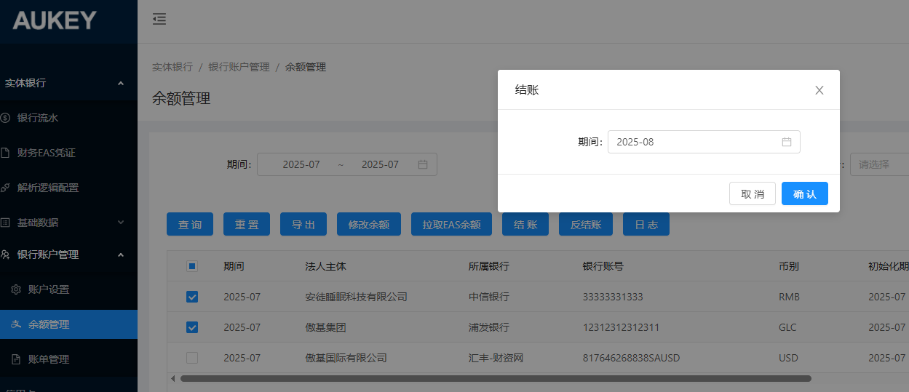

需求1：延迟交易计算汇总维度需加上账单期间
【平台财务报表/amazon/延迟交易数据】：两个页签【计算汇总】按钮计算汇总的维度均改为按【入账期间+账单期间+店铺+站点+部门+币种】维度
需求2：允许重新拉取未汇总的延迟交易数据；--现状：只能按期间拉取延迟交易数据，存在已汇总数据则无法重拉，各个部门管会要分别核对处理数据
【平台财务报表/amazon/延迟交易数据】：两个页签【拉取数据】按钮均调整以下逻辑：
仅限拉取是否汇总均为否的数据---调整为按【入账期间+店铺+站点+部门】维度判断同一维度下若存在是否汇总为是的数据，则该维度数据拉取时不做更新，其余是否汇总为否的数据删除后重拉；
需求3：【实体银行/银行账户管理/余额管理】：【结账/反结账】按钮去掉弹窗，支持按勾选或未勾选按筛选条件结账/反结账，点击按钮时需校验所选均为同一期间数据，若存在不同期间则结账/反结账失败并给出相应提示：
